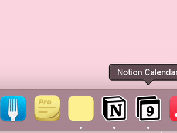
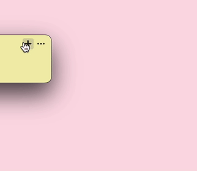
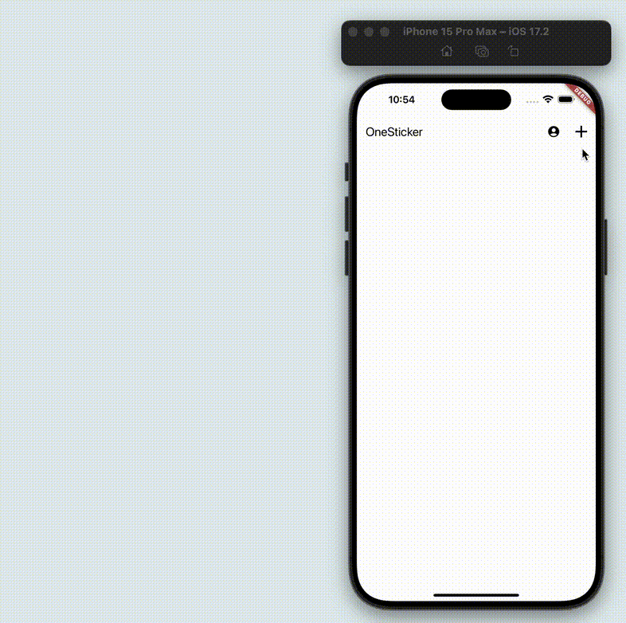

Sharing notes on your Mac has never been easier with OneSticker. Follow these simple steps to create and share your digital notes effortlessly.
1. Open OneSticker on Mac
Launch the OneSticker application on your Mac. You can find it in your Applications folder or use Spotlight search to quickly open it.
2. Create or Select a Note
Create a new note or select an existing one that you want to share. Click on the note to open it.
3. Access Your Note on Other Platforms
After adding your note, you can easily access it on other platforms. Simply download the OneSticker version for your desired platform, such as iOS, Android, or Windows.
4. Instant Sync with my.onesticker.app
Alternatively, you can open my.onesticker.app in any web browser to automatically and seamlessly access your note. This web version ensures your notes are always available, regardless of the device you're using.
With OneSticker, you can effortlessly create, manage, and access your notes across all your devices, making it the perfect solution for staying organized in today's multi-platform world.
Get OneSticker Now